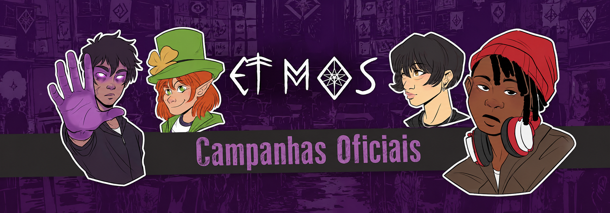

Atualmente, ETMOS RPG conta com duas campanhas oficiais de destaque, Ausentes e Instet, que apresentam diferentes histórias e possibilidades narrativas dentro do universo do sistema. Embora não possuam livros próprios dedicados à descrição de suas campanhas, ambas estão disponíveis em formato audiovisual, por meio de episódios publicados no YouTube. Essas produções permitem acompanhar o desenvolvimento das histórias, conhecer personagens marcantes e observar como o universo de ETMOS funciona na prática durante as sessões de RPG. Além de servirem como demonstrações do sistema, as campanhas apresentam diferentes situações, conflitos e elementos de ambientação que podem servir de inspiração para novos narradores e jogadores. Dessa forma, mesmo sem materiais literários específicos, oferecem referências importantes para a construção de personagens, elaboração de histórias e exploração das possibilidades presentes no universo de ETMOS.
Instet é uma campanha de ETMOS RPG produzida pela Távola Produções, que apresenta uma nova aventura dentro do universo de fantasia e magia do sistema. A narrativa acompanha personagens envolvidos em acontecimentos que exploram as possibilidades do Fantástico, colocando em evidência a criatividade, a engenhosidade e o uso da linguagem mágica para enfrentar diferentes desafios. Ao longo da campanha, os jogadores são apresentados a situações que exigem investigação, interpretação e soluções inesperadas, explorando as particularidades do sistema e suas possibilidades narrativas. A produção também demonstra como a magia pode ser utilizada de maneiras diversas, permitindo que os personagens interajam com o mundo ao seu redor e encontrem diferentes caminhos para superar obstáculos.
Por meio de seus episódios, Instet apresenta uma experiência de RPG de mesa que valoriza a construção coletiva da narrativa e a liberdade criativa dos jogadores. A campanha também serve como uma demonstração prática das mecânicas de ETMOS, evidenciando como suas regras permitem desenvolver histórias próprias e situações imprevisíveis.
Ausentes é a primeira campanha oficial de ETMOS RPG, ambientada em Brasilis, uma das mais importantes instituições de ensino mágico da América Latina. A história acompanha um grupo de estudantes que, em meio à rotina acadêmica e ao aprendizado das artes mágicas, acaba envolvido em uma investigação sobre o misterioso desaparecimento de alunos da instituição. À medida que os acontecimentos se desenrolam, os protagonistas passam a descobrir que existem segredos escondidos nos corredores da escola e que nem tudo é exatamente como aparenta ser. Entre investigações, descobertas e situações sobrenaturais, a campanha explora o cotidiano de jovens aprendizes de magia, suas relações e os perigos que cercam o Fantástico, apresentando ao público o universo de ETMOS e suas particularidades.
Ao longo da narrativa, os personagens precisam lidar com desafios que vão muito além das salas de aula, colocando à prova seus conhecimentos, habilidades e a confiança que depositam uns nos outros. A campanha apresenta diferentes aspectos da sociedade mágica, explorando suas instituições, tradições e os mistérios que envolvem esse mundo.